Copiar de - Roteiro de produção
Para abrir a tela de filtro dos roteiros de produção, é necessário selecionar pelo menos duas ordens de busca.
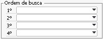{kind=link}
Caso o usuário deixe em branco todos os campos de ordem de busca, a seguinte mensagem aparecerá:
{kind=link}
BR One :: Informe pelo menos duas opções na ordem de busca antes de realizar este processo.
Ao selecionar para copiar de Roteiro de produção será aberta uma tela para que possa ser realizado o filtro dos Roteiros de produção que poderão ser selecionados.
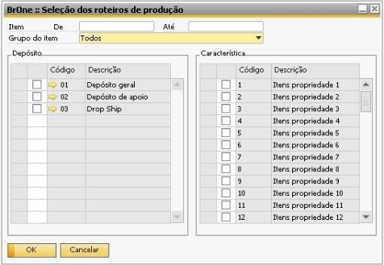{kind=link}
Após a seleção dos filtros, o processo segue como nas demais opções. Será aberta uma tela para seleção dos Roteiros de produção que participarão do processo.
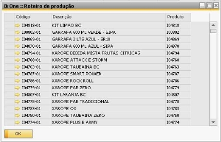{kind=link}
Se o flag Considerar rentabilidade do roteiro estiver marcado, para o roteiro de produção, será considerado o campo Rentabilidade que está nos cadastros:
Grupo de recursos
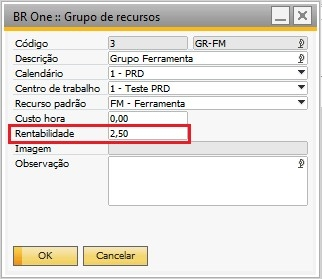{kind=link}
Cadastro do item
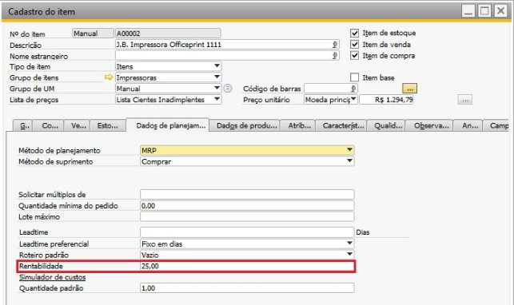{kind=link}
Roteiro
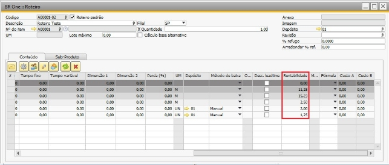{kind=link}
No Roteiro, o campo Rentabilidade virá conforme o cadastrado no item ou no grupo de recursos. Em todos os cadastros, o campo poderá ser alterado.
Quando o flag Considerar rentabilidade do roteiro estiver marcado, ele vai considerar a rentabilidade da linha do roteiro para fazer o cálculo, e não o campo Rentabilidade da aba Fatores.
De acordo com o roteiro selecionado, o cálculo será feito pra cada linha de operação e componente.
Exemplo: o Roteiro C00001-01 tem a máquina GR-MQ com rentabilidade 5%, e os componentes C00002 e C00003, com rentabilidade 10% e 15% respectivamente.
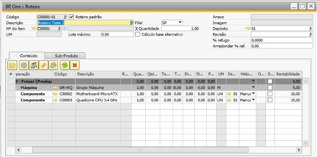{kind=link}
Ao simular ele na tela Simulador de custos, o custo unitário calculado para o roteiro é 690,46.
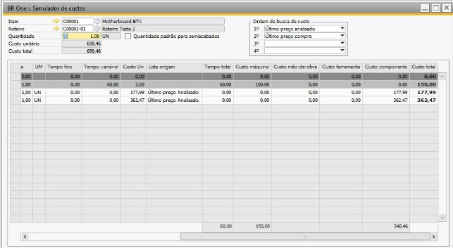{kind=link}
Ao carregar esse roteiro na tela Formação de preço de venda, com o flag Considerar rentabilidade do roteiro marcado (esse flag deve ser marcado antes de carregar o roteiro), e utilizando as mesmas listas na ordem de busca, o custo calculado considerará a rentabilidade da linha da máquina e dos componentes:
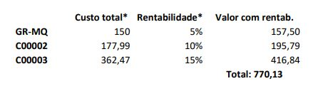{kind=link}
O Custo total está sendo recuperado do simulador de custos e a Rentabilidade do roteiro.
A fórmula para calcular o valor de cada linha com a rentabilidade é:
Valor com rentab. = Custo total + (Custo total * Rentabilidade / 100)
Exemplo cálculo GR-MQ:
Valor com rentab. = 150 + (150 * 5 / 100)
Valor com rentab. = 150 + (750 / 100)
Valor com rentab. = 150 + 7,50 = 157,50
Ao calcular o roteiro na formação de preço de venda, o valor de base de cálculo será o valor 770,13.
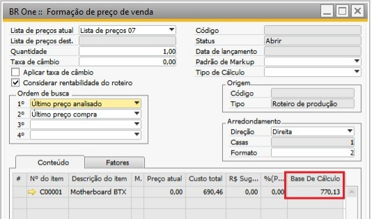{kind=link}
Colunas Fator 1 e Fator2 :
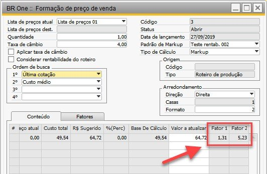{kind=link}
O Fator 1 obtém seu valor através do resultado da divisão da coluna R$ Sugerido com o Custo Total.
Conforme o exemplo:
Fator 1 = 64,72 / 49,54
Fator 1 = 1,31
O Fator 2 é obtido através do cálculo realizado anteriormente. Com o valor obtido, é realizada a multiplicação pela taxa de câmbio definida. Nesse caso:
Fator 2 = (64,72 / 49,54) * 4
Fator 2 = 5,23
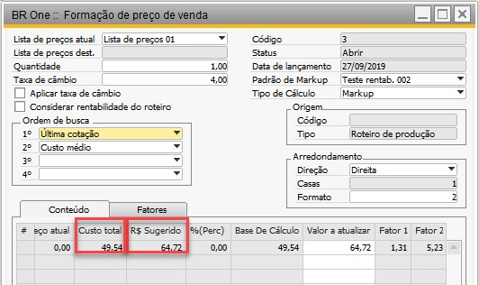{kind=link}
Quando o flag Considerar rentabilidade do roteiro estiver marcado, o cálculo do campo Fator 1 será o resultado da divisão da coluna R$ Sugerido com o Base de cálculo.
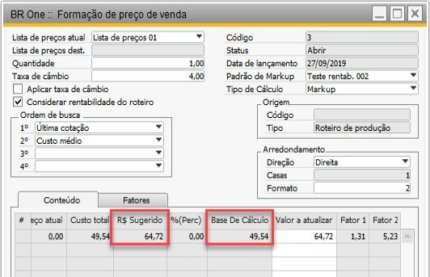{kind=link}
Exemplo:
Fator 1 = 64,72 / 49,54
Fator 1 = 1,31